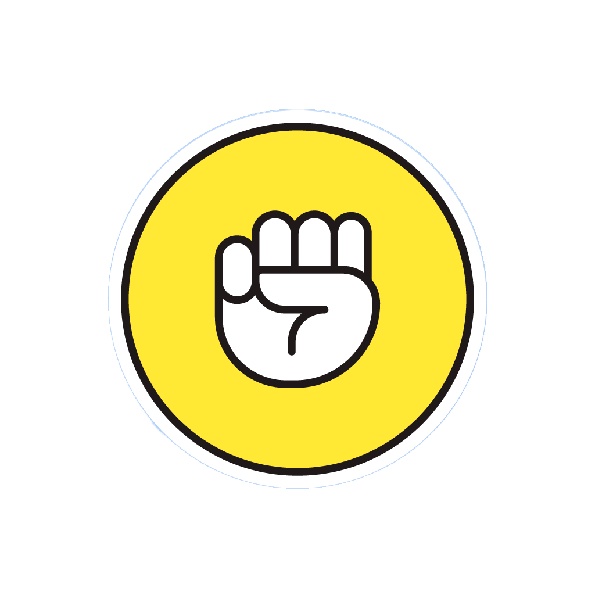
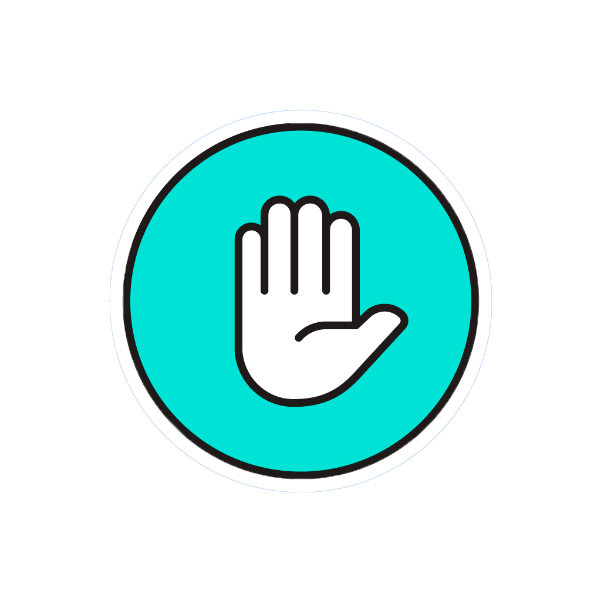
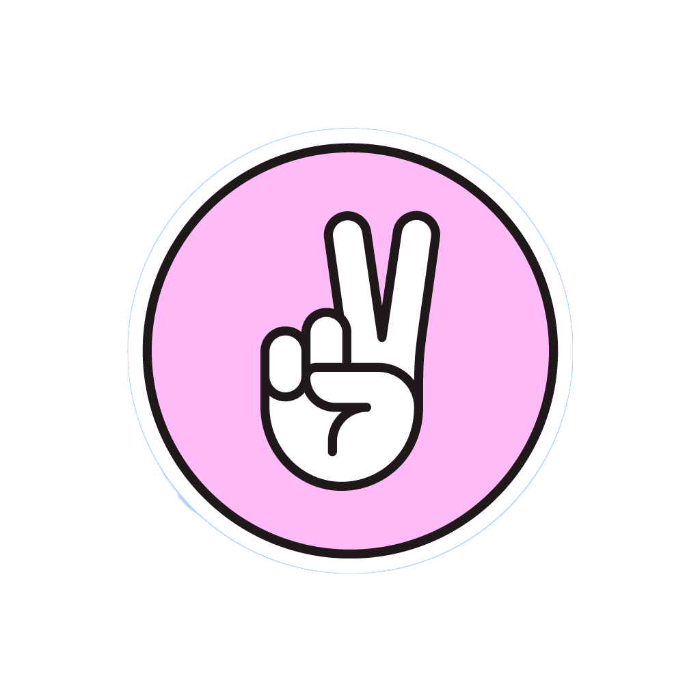

<ion-header>
  <ion-toolbar color="success">
    <ion-buttons slot="start">
      <ion-button (click)="dismiss()">
        <ion-icon name="close-outline"></ion-icon>
      </ion-button>
    </ion-buttons>
    <ion-title class="ion-text-center">
     Piedra Papel Tijera
    </ion-title>
  </ion-toolbar>
</ion-header>
<ion-content>
  <div style="background-color: rgb(78, 78, 78);height: 100%;">
    <div align="center" class="fondo">
        <br>
        <div [style.opacity]="opacity">
            <ion-card style="width: 90%;height: 80%;max-height: 450px; max-width: 700px;border-radius: 20px;">
                <ion-card-header>
                    <h1 style="color: rgb(116, 116, 116);"><b>Seleccione una opción...</b></h1>
                </ion-card-header>
                <ion-card-content>
                    <button (click)="OpcionElegida('piedra')" style="border-radius: 300%;height: 120px;width: 120px;background-color: rgb(255, 251, 0);">
                      
                  </button>
                  <button (click)="OpcionElegida('papel')" style="border-radius: 300%;height: 120px;width: 120px;background-color: aqua;">
                    
                </button>
                <button (click)="OpcionElegida('tijera')" style="border-radius: 300%;height: 120px;width: 120px;background-color: rgb(229, 128, 255);">
                  
              </button>


                    <!-- <mat-grid-list cols="3" style="min-width: 370px;max-width: 600px;width: 30%;height: 10%;">
                        <mat-grid-tile>
                            <button mat-raised-button (click)="OpcionElegida('piedra')" style="border-radius: 300%;height: 120px;width: 120px;background-color: rgb(255, 251, 0);">
                                
                            </button>
                        </mat-grid-tile>
                        <mat-grid-tile>
                            <button mat-raised-button (click)="OpcionElegida('papel')" style="border-radius: 300%;height: 120px;width: 120px;background-color: aqua;">
                                
                            </button>
                        </mat-grid-tile>
                        <mat-grid-tile>
                            <button mat-raised-button (click)="OpcionElegida('tijera')" style="border-radius: 300%;height: 120px;width: 120px;background-color: rgb(229, 128, 255);">
                                
                            </button>
                        </mat-grid-tile>
                      </mat-grid-list> -->
                </ion-card-content>
                <br>
                <br>
            </ion-card>
        </div>
    </div>
</div>
</ion-content>
